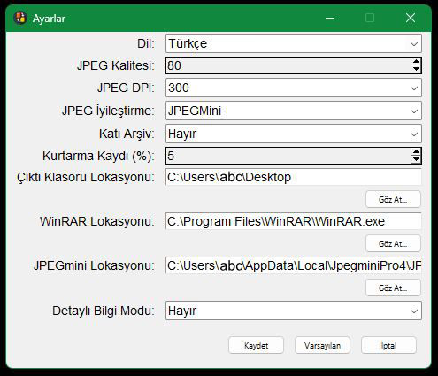

Ayarlar Penceresi

CBX Tools, CBR, CBZ ve PDF gibi yaygın çizgi roman dosya formatlarını
dönüştürmeye ve optimize etmeye yardımcı olmak için tasarlanmış bir yardımcı programdır. CBX Araçları,
resim
çözünürlüğünü ve DPI ayarlarını mümkün olduğunca koruyarak yüksek kaliteli sonuçlar için neredeyse
kayıpsız
dönüşüm ve optimizasyon sağlamayı amaçlar.
- Dil: Arayüz dilini seçin (İngilizce veya Türkçe). Dil ayarı, değiklik
kaydedilir kaydedilmez
hemen sonra uygulanır.
- JPEG Kalitesi: JPEG formatındaki dosyaların kalitesini ayarlar (10–100). Bu
ayar, PDF'den CBR'ye
dönüşüm sırasında JPEG görüntüleri veya JPEG'e dönüştürülmesi gereken PBM, PGM ve PPM gibi
formatlar
için kullanılır. 80'in üzerindeki değerler dosya boyutunu belirgin şekilde artırırken kaliteyi
gözle görülür bir şekilde artırmaz.
Optimum kalite ve daha küçük dosya boyutları için 70 ile 80 arasında bir değer önerilir.
Varsayılan değer
80'dir.
- JPEG DPI: JPEG görüntüleri için çözünürlüğü DPI cinsinden belirler (150, 300,
400, 600).
Bu ayar, PDF'den CBR'ye dönüşüm sırasında JPEG görüntüleri veya JPEG'e dönüştürülmesi gereken
PBM, PGM
ve PPM gibi formatlar için uygulanır. 400 ve üzerindeki değerler dosya boyutunu belirgin şekilde
artırır. Kalite
ve dosya boyutunun dengesi için 300 DPI önerilir. Varsayılan değer 300'dür.
- JPEG Optimizasyonu: JPEG görüntülerini optimize etmek için kullanılacak aracı
belirler (çözünürlük veya DPI
değerlerine dokunmadan dosya boyutlarını azaltmaya yarar).
Devre Dışı: JPEG dosyaları üzerinde işlem uygulanmaz.
jpegoptim.exe: CBX Tools ile gelen ücretsiz bir araçtır, Huffman tablosu
ayarlamaları
ile kayıpsız optimizasyon sağlar.
JPEGmini Pro: Ücretli bir araçtır, kaliteyi bozmadan dosya boyutunu küçültür ve
jpegoptim'den
daha hızlı ve daha iyi sonuçlar sunar. Bu aracın kurulum ve yapılandırması Kullanım Klavuzu
bölümünde anlatıldığı gibi yapılmalıdır.
Manuel: Süreci durdurur, kullanıcıdan dosyaları manuel olarak optimize etmesini
ister. Tamamlandıktan
sonra devam etmek için 'Tamam'a tıklayın.
- Solid Archive: RAR sıkıştırmasında katı arşivlemeyi etkinleştirir veya devre
dışı bırakır. Varsayılan
değer Hayır (Devre Dışı).
Katı arşiv, birden fazla dosyanın sıkıştırma sürecinde tek bir dosyaymış gibi ele alındığı bir
sıkıştırma
türüdür. Bu yöntem, benzer dosyaların koleksiyonlarında daha iyi sıkıştırma oranları
sağlayabilir, çünkü dosyalar
arasındaki paylaşılan verilerin daha verimli bir şekilde depolanmasına olanak tanır.
Katı arşiv kullanmak, büyük çizgi roman dosyalarının dosya boyutunu azaltmaya yardımcı olabilir,
bu da daha küçük
dosya boyutları sağlar. Ancak, 150 sayfadan küçük çizgi roman dosyalarında etkisi ihmal
edilebilir. Ayrıca, katı
arşivlemeyi etkinleştirmek, aynı kurtarma kaydı yüzdesine sahip normal sıkıştırma ile
karşılaştırıldığında dosya
kurtarılabilirliğini azaltabilir. Dosya bozulması durumunda, katı arşivlerle kurtarma işlemi
daha zor olabilir.
- Kurtarma Kaydı (%): RAR arşivleri için kurtarma verilerinin yüzdesini belirler.
(3%-10%).
Kurtarma kaydı, bir arşivin bozulması durumunda arşivi kurtarmaya yardımcı olmak için eklenen
bir veri setidir.
Bir RAR arşivi kurtarma kaydıyla oluşturulduğunda, arşivin bir kısmı hata düzeltme bilgilerini
saklamak için
ayrılır. Eğer bir kısmı bozulmuş veya okunamaz hale gelirse, bu kayıt kullanıcının arşivi
onarmasına olanak tanır.
Daha yüksek bir yüzde, bozulmuş bir arşivden veri kurtarma şansını artırırken, dosya boyutunu da
artırır.
Varsayılan değer
%5'tir ve bu, sıkıştırma ve kurtarılabilirlik arasında bir denge sağlar.
- Çıktı Klasörü Yolu: Çıktı dosyalarının kaydedileceği OUTPUT klasörünün yolunu
belirler.
Çıktı klasörü, işlem (sıkıştırma veya optimizasyon gibi) tamamlandıktan sonra işlenmiş veya
değiştirilmiş dosyaların
saklanacağı yerdir. CBX Tools, orijinal kaynak dosyaların değişmeden ve olduğu gibi kalmasını
sağlar. Yalnızca yeni
dosyalar belirtilen çıktı klasörüne yerleştirilir. Bu, kaynak dosyaların güvende kalmasını
sağlar
.
Örneğin, Çıktı Klasörü Yolu C:\users\abc\Desktop olarak ayarlandığında, işlenmiş dosyalar
C:\users\abc\Desktop\OUTPUT
altında yer alacaktır. Eğer OUTPUT klasörü mevcut değilse, otomatik olarak oluşturulacaktır.
Eğer OUTPUT klasörü zaten
mevcutsa ve dosyalar içeriyorsa, mevcut klasör yeniden adlandırılacak ve yeni bir
C:\users\abc\Desktop\OUTPUT klasörü
oluşturulacaktır. Bu, final dosyalarının her zaman yeni bir, özel klasöre yerleştirilmesini ve
mevcut dosyaların üzerine
yazılmamasını sağlar.
- WinRAR Yolu: WinRAR program dosyasının yolunu belirtin. Varsayılan değer
C:\Program
Files\WinRAR\
- JPEGmini Yolu: JPEGmini uygulamasının yolunu belirtin. Bu değer JPEG
Optimizasyonu kutusunda
JPEGMını Pro seçilmişse gereklidir.
- Ayrıntılı Bilgi Modu: Ayrıntılı çıktıyı etkinleştirin veya devre dışı bırakın
(Evet/Hayır).